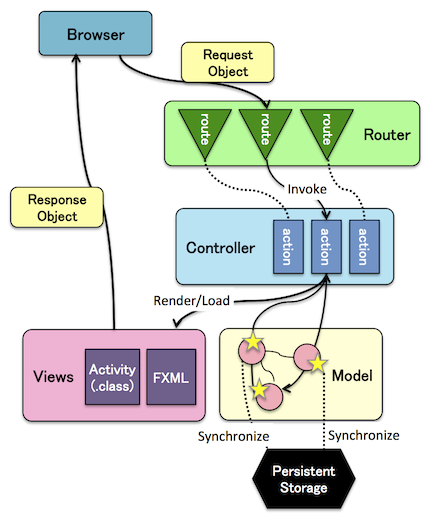
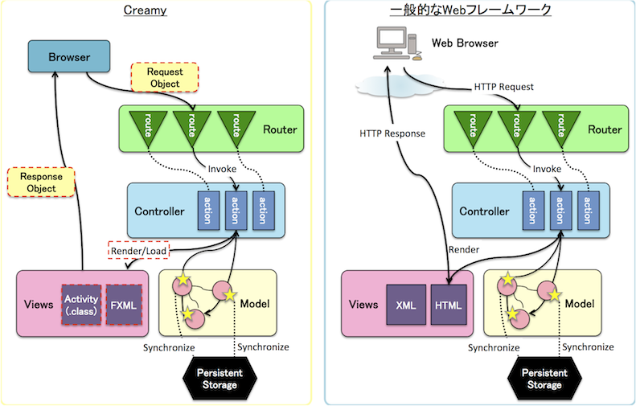

<<<<<<< HEAD
Table Of Contents
Previous topic
Next topic
This Page
=======

CreamyフレームワークはWebアプリケーションと同じく、完全にステートレスであり、 リクエスト/レスポンスのみを重視します。 すべてのリクエストは同じ処理フローを通ります。では実際に処理フローを見てみましょう。
<<<<<<< HEAD処理フローを以下にまとめます。
 =======処理フローを以下にまとめます。
Browser は、CreamyアプリケーションのUIを表示するためのCreamyのコンポーネントです。 Creamyアプリケーションは、すべてBrowserコンポーネントを使用してUIを表示します。 また、Routerへのリクエスト送信、Routerからのレスポンス受信もBrowserが行います。
Note
Browserについては Browser で詳しく説明します。
Creamyの処理フローはステートレスであり、一般的なWebフレームワークの処理フローと変わるものでありません。
たたし以下の点が異なります。
CreamyとWebフレームワークの違い
| リクエスト/レスポンス | リクエストボディ | |
|---|---|---|
| Creamy | Javaオブジェクト (Requestクラス/Responseクラス) |
FXMLをJavaFXランタイムでロードしたもの (Javaオブジェクト) |
| 一般的なWebフレームワーク | HTTPリクエスト/HTTPレスポンス | HTML/XML (テキスト) |
CreamyはひとつのJavaVM上で動作します。Webのようにネットワークを介する訳ではありません。
Requestクラス/ResponseクラスはHTTPリクエスト/HTTPレスポンスにあたるJavaオブジェクトです。
また、レスポンスボディには、JavaFX Scene Graphオブジェクト(UIに表示されるオブジェクトの実体)と Activityオブジェクトが含まれます。(Webではテキストベースですが、CreamyではJavaオブジェクトということです。)
より具体的には以下となります。(上図の「Views」部分)
2.では、さらに、Scene Graphオブジェクトのハンドラーの役割を果たすオブジェクトを生成します。 Creamyでは、このオブジェクトをActivityと呼んでいます。
Note
<<<<<<< HEADAcitivityについては architecture/view_activity で詳しく説明します。
=======Acitivityについては Viewの構成とActivity で詳しく説明します。
>>>>>>> pages-workでは、最後に、まとめとしてCreamyとWebフレームワークを処理フローで比較します。
処理フローの比較
Creamy(左側の図)で赤い破線で示す箇所が、Webフレームワークと異なるところです。
ところでCreamyのBrowserとは何でしょうか？では、次にBrowserについて見ていきましょう。